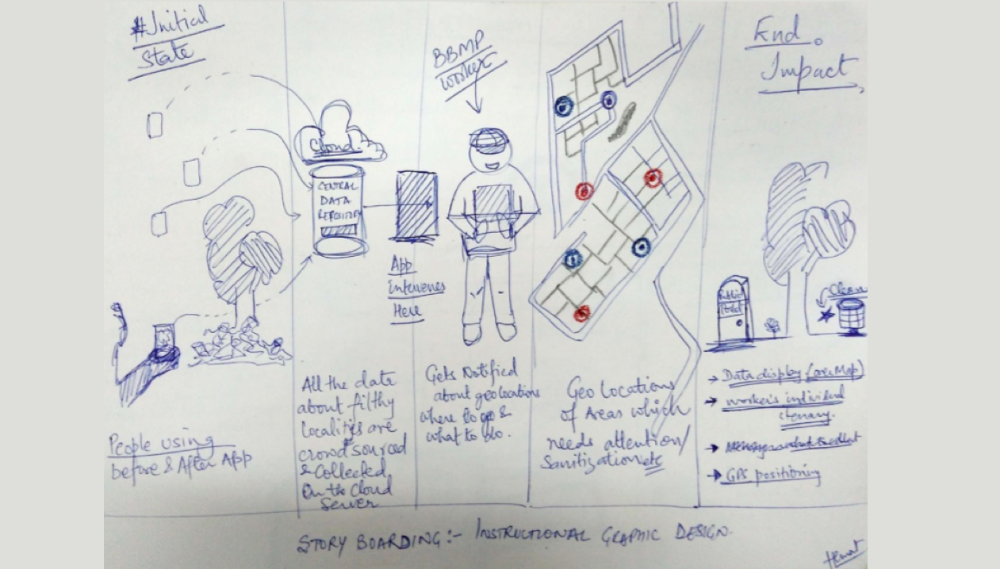
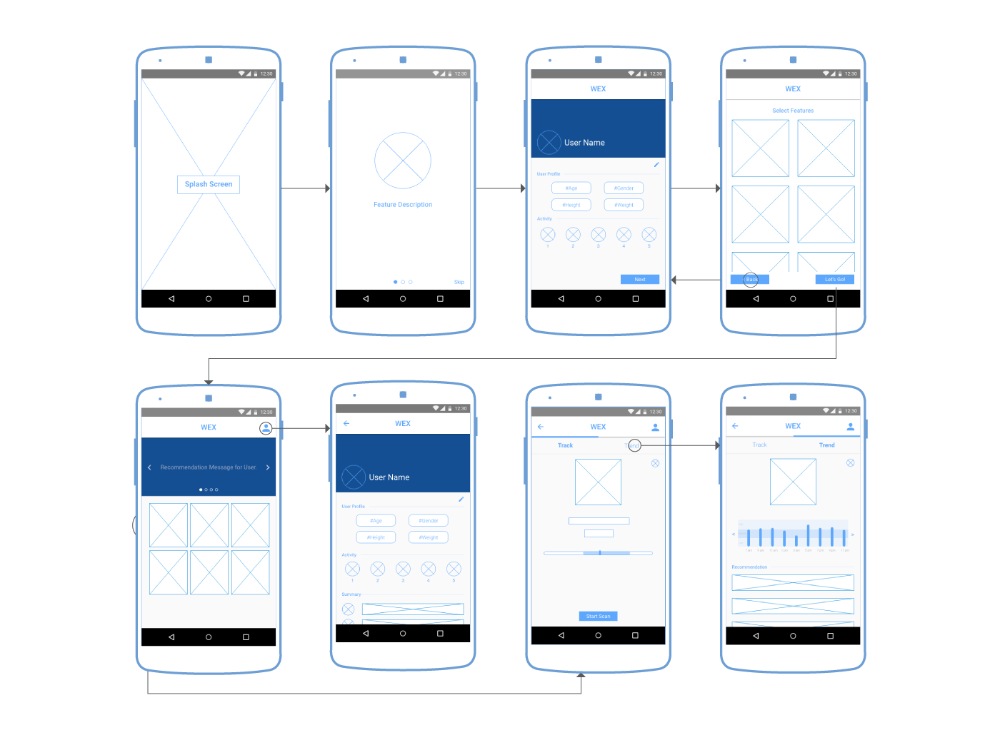

The project was done as part of an Instructional Graphic Design course at NID. The brief of the project was to design a mobile application for the Swachh Bharat Mission.
Haritkar (i.e. Harit + Kar; where "Harit" means "Green" and "kar" relates for "Workforce" in Hindi) is an unique application that simply allows municipality to be efficient in performing their duties.
The municipality workers is an user group that is quite unique and challenging to design for. Although the Swachh Bharat Mission has become a fad in India, but the heavy duty of keeping the city clean is still done by municipality workers, who are the majorly ignored task force of the society.
Final Deliverable
Understanding the user
I conducted a small primary research study (observation method) that helped me understand why municipality was not efficient? and especially the problems faced by municipality cleaning workers. My observations suggested following facets of municipality workers:
Hence, my proposal for the app is a scenario where the app helps the workers to reach desired locations quickly, allows their work status updated to the higher authorities transparently and thus getting recognised for their work on larger platform.
Basic system flow
System flow diagram leveraging Swatch Bhart Mission.
Wireframing and Iterations
